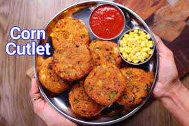

Corn Cutlet Recipe

Description
It is an easy and simple healthy patties or cutlet recipe made with crushed sweet corn kernels with other supporting vegetables. In other words, corn cutlet or sweet corn kebab is known for its combination of tastes, especially the sweetness of corn and the spiciness of the added spice mix. It is a popular choice as an evening snack with a cup of tea, but can also be a popular choice as a party starter or as an appetizer.
There are many different types of corn cutlet or corn kebab recipes but the most common way is prepared like a patties. Basically, corn mixture is mixed with other vegetables shaped like a circular disc and deep fried till crisp. The shaping does not matter much and more importantly does not affect the taste of the cutlet. The other most common way is to make it with just sweet corn. But this can be tricky to shape and also may soak more oil while deep frying.
Ingredients
- 1 cup sweet corn
- 2 tbsp carrot, grated
- 2 tbsp capsicum, chopped
- ½ onion, finely chopped
- 2 tbsp coriander, chopped
- ¼ tsp turmeric
- ½ tsp chilli powder
- ½ tsp coriander powder
- ½ tsp cumin powder
- ½ tsp salt
- 2 potato, boiled
- ¼ cup bread crumbs
- 2 tbsp corn flour
- oil, for frying
Steps
- Firstly, in a mixer jar take 1 cup sweet corn, pulse, and grind to coarse texture.
- Transfer the coarse sweet corn into a large bowl.
- Add 2 tbsp carrot, 2 tbsp capsicum, ½ onion, 2 tbsp coriander.
- Also add ¼ tsp turmeric, ½ tsp chilli powder, ½ tsp coriander powder, ½ tsp cumin powder, and ½ tsp salt.
- Now add 2 potato and mix well making sure all the spices are well combined
- Further, add ¼ cup bread crumbs and 2 tbsp corn flour.
- Mix well forming a soft dough. corn flour helps to make cutlet crispy and bread crumbs absorbs excess moisture and prevents from breaking in oil while frying.
- Grease hands with oil, and shape the cutlet.
- Deep fry in hot oil, keeping the flame on medium.
- Stir occasionally, until the cutlet turns golden brown and crispy.
- Drain off the cutlet over a kitchen towel to remove excess oil.
- Finally, enjoy crispy corn cutlet recipe with tomato sauce.
Return to top
Return to main page